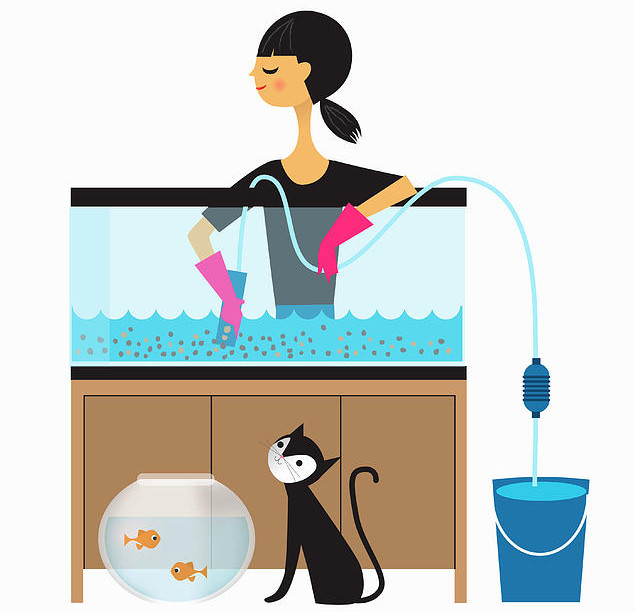

There’s a common mistake that many young or newbie aquarists make when they decide to buy a fish tank. For some reason, lots of beginner aquarists seem to think that fish do not require hardly any maintenance.
However, nothing could be further from the truth. Knowing when and how to clean a fish tank is a fundamental skill for any aquarist.
Sure, you don’t have to walk your fish twice a day, get them vaccinated, trim their fur, or clip their nails. You don’t need to throw a ball for exercise (unless it’s a moss ball) or a toy mouse for them.
But you absolutely DO need to take care of your fish properly. That includes understanding how to clean a fish tank, how often you should clean your fish tank, and the equipment that will help keep it clean.
So now you might be asking yourself, how do I clean a fish tank? How often should I clean my fish tank filter? How often should I change the water in my fish tank? Should I remove my fish when cleaning my fish tank?
In this article we’ll cover everything you need to know in order to keep your fish tank clean and make sure your fishy friends are happy and healthy. Keep reading to learn more about how to clean a fish tank.
HOW OFTEN SHOULD YOU CLEAN A FISH TANK?
Cleaning a fish tank is quite simple but it needs to be done on a regular basis. The best way to keep your tank clean is to do a little cleaning every day.
This will also help you avoid having to do a massive clean, which is a huge pain and can also be harmful to your fish. Your fish will thank you for keeping their home clean on a daily basis.
There aren’t any strict guidelines about how often you should clean your tank. It depends on things like how many gallons of water it holds, how many fish you’re keeping (and what type), and whether you have live plants or animals that will help keep it clean.
Cleaning schedules will also differ depending on whether you have a coldwater tank or a heated tropical tank, whether it’s freshwater or saltwater, what kind of filter or filtration substance you’re using, the sort of lighting that you’re running, and whether or not you have a UV sterilizer. As you can see, there are a lot of different factors to think about!
CHANGING THE WATER WHEN CLEANING A FISH TANK
Whether you’re keeping coldwater or tropical fish - in freshwater or saltwater - partial water changes are essential for fish health.
Guidelines vary when it comes to the amount of water that you should change each time. Some aquarists advise a 15% water change once a week, while others suggest 25% or even 30%. The best amount for your tank will depend on your tank size, how many fish you’re keeping in it, and what kind of filtration options you’re using.
You can use different online calculators to help you figure out how much water you need to change and how often.
As a general rule, a 10-15% water change is a good place to start. As fish are sensitive creatures, you don’t want to change too much water at once. It can stress your fish, and also potentially remove too much of the beneficial bacteria that live in the water.
HOW TO CLEAN A FISH TANK
Before you start a water change, it’s important to make sure your hands are clean and dry. You want to make sure you’ve removed all traces of soap or detergent, as there are chemicals in these products that can be very harmful to your pets.
Begin by checking your tank for algae. You can scrape this off before you change the water by using one of the commercially available algae scrapers on Amazon. You can also use an algae scouring pad or one of the new magnetic glass cleaners available on Amazon.
To change the water, use a siphon tube to remove around 10-15% of the volume in your tank. Many of today's commercially available fish tank siphons also include a gravel vacuum. These can help you to gently suction debris and algae out of the gravel as well.
Be very gentle as you’re doing this, you don’t want to frighten your fish with lots of vigorous activity! Go slowly and give your pets time to adjust to what is happening.
To use a siphon tube, you don’t need to suck on one end to get the suction moving. It’s much easier fill the hose with water by submerging it completely in your tank. Once it’s full, put your thumb over one of the open ends and then move that end out of the tank and into your bucket. The pressure will cause the water to enter the bucket by itself – no sucking required.
But wait, don’t throw this old tank water out yet! You should use this water to rinse or clean your filters and filter media. This will allow you to keep the beneficial bacteria that have colonized those materials.
Never clean a filter with tap water! This will kill off all the healthy critters that help to keep your tank clean and your fish in good health.
After you’ve vacuumed the gravel using the suction tube, you can add your new water to the tank. You should use a special bucket for this step. Make sure you never use this bucket for anything else, and never let soap or detergent get into the bucket. Even the tiniest amount of residue can be harmful to your fish.
It’s important that you don’t use straight tap water, as it can have chlorine and other additives in it that are dangerous to the health of your fish. Fill your special fish water bucket with water and let it sit overnight to let the chlorine evaporate. Or, you can treat it with a dechlorinator.
Once the water is ready to add, pour it into the tank slowly. You should add it in a gentle, slow stream so that it mixes well with the original tank water. You can also add it using the siphon method, but in reverse.
WHAT TOOLS DO YOU NEED TO CLEAN YOUR FISH TANK?
Here’s a list of basic items available on Amazon that you can buy to build your own aquarium cleaning kit.
- 2 Buckets: 1 for old tank water to be removed and 1 for clean water to be added
- Siphon tube with gravel vacuum
- Algae scraper and/or scourer
- Fish Net
- Filter Brush
- Floating Magnetic Cleaner
- Dechlorinator
SHOULD YOU REMOVE YOUR FISH WHEN CLEANING YOUR TANK?
Again, there are no hard and fast rules here. It will depend on the size of your tank and the kind of fish you have. If you have a very large tank, you may find your fish will move away while you’re cleaning an area and won’t need to be removed. If you’re only doing a small water change – say 10-15% - then you shouldn’t remove the fish, even in a small tank or bowl, as this sudden change can stress them out.
HOW OFTEN SHOULD YOU CLEAN YOUR AQUARIUM FILTER?
There are three primary kinds of filters you might use in your fish tank – mechanical, chemical and biological.
-
MECHANICAL FILTERS
Mechanical filters need their sponge or foam pad cleaned around once a month. However, make sure you don’t do it at the same time you do a partial water change. It’s a good idea to do it a week or two after, so that your fish don’t get two shocks at once. You should always clean the filter by swishing it around in water that you take out from your aquarium. Don’t clean it under the tap. Just wash off the gunk with your hands and then replace the sponge or pad.
-
CHEMICAL FILTERS
Chemical filters such as carbon filters need to be changed regularly - around every 3-4 weeks. It’s a good habit to get into doing this once a month along with your partial water change. You might need to do it more often if your aquarium water becomes cloudy very quickly.
-
BIOLOGICAL FILTERS
BIOLOGICAL FILTERS Biological filters such as moss balls don’t need to be cleaned very often or at all. If you do need to clean a biological filter, make sure you do it in the water from the tank, during the partial water change.
CLEANING YOUR FISH TANK AFTER A FISH DIES
It’s not a topic that anyone likes to talk about, but chances are that at some point you will experience a fish dying. After this happens you’ll need to take steps quickly to make sure infection and bad bacteria don’t pollute your tank.
The first thing you should do is remove the dead fish as soon as you notice it.
Once a fish dies it will begin to decompose immediately, which means it will start releasing toxic chemicals into the water.
Once the fish has been removed, test your water. Bad water quality is often one of the biggest contributors to fish death. High ammonia and nitrate levels can kill fish quickly, especially if you have a small tank where pollution levels can spike suddenly if you aren’t staying on top of your regular cleaning and maintenance routine.
If the results indicate high ammonia or nitrate levels, you should do a partial water change to help improve the water quality for your remaining fish.
But what about if the water results come back in the normal range? Now it’s time to see if there’s anything obvious you can notice from the dead fish. What might have caused it to die? Is it bloated? Is there fungus or slime trailing from its body?
Finding out what killed your fish will help you take any necessary corrective action. It could be a fungus, a parasite or an infection. In this situation, seek advice from your local fish expert or pet store on the best way to treat the tank.
A GOOD CLEANING ROUTINE FOR YOUR TANK
Here are some general guidelines to consider when you’re thinking about how often you need to clean your tank.
DAILY
If you’re cleaning your tank every day then can we kindly suggest that you might be being a bit obsessive about it and you should probably (read, definitely) relax a bit. You don’t want to get rid of all the beneficial bacteria inside your aquarium. Aquariums are little mini eco-systems and they need a certain level of bacteria and dirt for balance and to run effectively.
Inspect your fish tank daily for any signs of trouble or other issues.
This will help you get familiar with the cycle of your tank, the health and behavior of your fish, and the levels of gunk and any harmful chemicals in the water.
Take a good look at your fish. Do they all look healthy? Are they following their usual behavior? Or are they doing something different or unusual? Are they trying to gulp for air? Do they look stressed or sluggish? Is their color healthy? Do their fins, tails and scales look clean and vibrant? Is there any slime or fungus hanging onto them?
What about the tank itself? Can you see any algae starting to form on the aquarium walls, the driftwood, and/or any decorations you have in your tank? Are the plants a healthy green color? Are there any brown spots or leaves? Are there any loose or rotted leaves floating at the top or lying on the bottom?
Getting to know your fish and their habitat in this way will help you spot any potential problems. And that means you can take action to prevent them – for example, you might need to do a partial water change, even if it’s been less than a week since the last one.
WEEKLY
How often should you clean a small aquarium?
If you’ve got a 5 or 10-gallon tank then the answer is definitely at least once a week. Remember, the water inside your aquarium is the equivalent of air to your fish. Would you want to have to swim around in water that’s old, polluted with ammonia and other harmful substances, and full of floating bits of rotten food and fish waste? It sounds pretty gross, doesn’t it?
You should do a partial water change and use your aquarium vacuum to clean your gravel. Take care of any algae that’s formed around the walls or your ornaments by using a sponge or a scraper to remove it.
It’s also a good idea to get into the habit of counting your fish once a week, especially if you’re keeping schools of little fish. A tiny tetra or other small type of fish can die and drift to the bottom unnoticed, causing the ammonia and nitrate levels in your tank to spike quickly.
If you’re running a medium sized aquarium - 15-60 gallons - then you should still consider a partial water change at least once a week in order to keep the tank fresh and clean.
In large and well established tanks though, you might only need to change the water once every 10-14 days instead.
MONTHLY
Testing your aquarium water monthly for its ammonia, nitrate, and pH levels is an excellent way to monitor the health of your fish tank environment.
You should test your tank water at least once a month. Other cleaning tasks that should be done on a monthly basis include filter media or cartridge changes. If your tank has air stones those should be cleaned to prevent clogs.
It’s a good idea to record water test results in a special notebook or in a notes file on your phone. This will allow you notice any deviations from month to month. If you notice the levels starting to shift over time, you should test the water more frequently. And if your fish are starting to look stressed or unhealthy, you shouldn’t wait out the month before testing again. Is the water getting cloudy or turning a strange color? If so, then it’s time to test again.
For filter media and cartridges, rinse these using the water that you take out from the tank during the water change. Again, don’t use water from the tap! You want to support the bacterial colonies, so gently swish the cartridges or media in this tank water instead.
For air stones, you can clean these either by boiling them in fresh, clean water or by simply replacing them entirely.
During the monthly clean you can also take the opportunity to replace any filter inserts, cartridges, carbon or floss.
Last of all, check the expiration dates on all the aquarium supplies you use. It’s easy to lose track of how fresh the supplies are in their boxes and bottles, and you don’t want to be testing your aquarium water with a test kit that’s actually expired. It could give a false reading and you might take action that isn’t necessary, and that could accidentally harm or kill the fish or plants inside your tank.
SEMI-ANNUALLY
It’s a good idea to give all the equipment in and around your fish tank a solid clean at least once every six months.
Doing this will help you keep an eye on how all your equipment is functioning, so that you can repair or replace it if you need to. It also gives you an opportunity to really clean everything properly.
Turn off and unplug all the equipment you have in your fish tank. Inspect all your equipment carefully, and use the opportunity to get out any dust, dirt or debris that have snuck in there.
This includes tank hoods, filters, pumps and light fixtures. Wipe down the hood and the pump housing before putting everything back together.
DEEP CLEANING YOUR FISH TANK
A deep clean refers to taking everything out of your tank and scrubbing it clean from top to bottom. This includes removing fish, water, ornaments, plants – the lot.
A deep clean is a dramatic approach that you should only do under dire and special circumstances, such as if you have a disease outbreak in the tank that can’t be fixed by any other method of treatment.
Because a deep clean involves taking everything out of the tank, it is incredibly stressful for your fish. It will also kill all the healthy bacteria in the tank. You will need to carefully reestablish those colonies again and cycle your aquarium properly before your tank will function properly after the clean.
CONCLUSION
As you can see, there are a lot of merits to keeping on top of your aquarium cleaning routine. Not only does regular aquarium maintenance help keep your fish healthy and thriving, it gives you the best chance of being top of any issues before they become real problems that might harm your pets.
Your fish will thank you for their fresh, clean water, and you’ll have a beautiful, sparkling tank to admire. What could be nicer?!